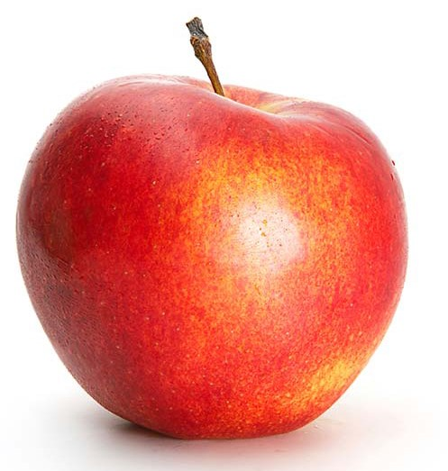

tentangbuah.com
Mangga

Apel adalah jenis buah-buahan, atau buah yang
dihasilkan dari pohon buah apel. Buah apel biasanya berwarna merah
kulitnya jika masak dan (siap dimakan), namun bisa juga kulitnya
berwarna hijau atau kuning. Kulit buahnya agak lembek, daging
buahnya keras. Buah ini memiliki beberapa biji di dalamnya.
Orang mulai pertama kali menanam apel di Asia Tengah. Kini apel
berkembang di banyak daerah di dunia yang suhu udaranya lebih
dingin. Nama ilmiah pohon apel dalam bahasa Latin ialah
Malus domestica . Apel budidaya adalah keturunan dari
Malus sieversii asal Asia Tengah , dengan sebagian genom
dari Malus sylvestris (apel hutan/apel liar).
Kebanyakan apel bagus dimakan mentah-mentah (tak dimasak), dan juga
digunakan banyak jenis makanan pesta. Apel dimasak sampai lembek
untuk dibuat saus apel. Apel juga dibuat untuk menjadi minuman sari
buah apel.
Khasiat Apel
- Meningkatkan daya memori
- Baik untuk usus
- Meningkatkan sistem kekebalan tubuh
- Baik untuk jantung
- Menurunkan tekanan darah
- Mengurangi risiko diabetes
Daftar Harga
| Jenis Apel | Harga | |
|---|---|---|
| Per Kilo | Per Biji | |
| Apel Manalagi | 50.000 | 5000 |
| Apel Fuji | 60.000 | 6000 |
| Apel Anna | 70.000 | 7000 |
| Apel Merah | 55.000 | 5500 |